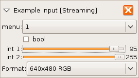

input.example
Example Input Unit — Always-available debugging unit
|
|
Description
input.example provides an always-present input unit
that can be used for debugging when no other units are available.
Additionally, it serves as an example of how to create a simple unit driver
and unit with basic controls.
This unit generates a constantly changing test pattern.
Input Formats
None. This is an input unit.
Output Formats
640x480 RGB 24bpp
Controls

menu
Example enumerated control. Controls the frame rate of images produced by this unit.
bool
Example boolean control. Controls the color of the test pattern.
id:
|
boolean |
type:
|
boolean |
int 1
Example integer control. Controls the size of the test pattern.
id:
|
int1 |
type:
|
integer |
range:
|
0 - 100 |
int2
Example integer control. Controls the brightness of the test pattern.
id:
|
int2 |
type:
|
integer |
range:
|
0 - 255 |